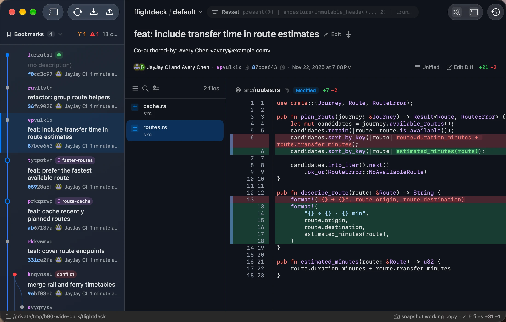
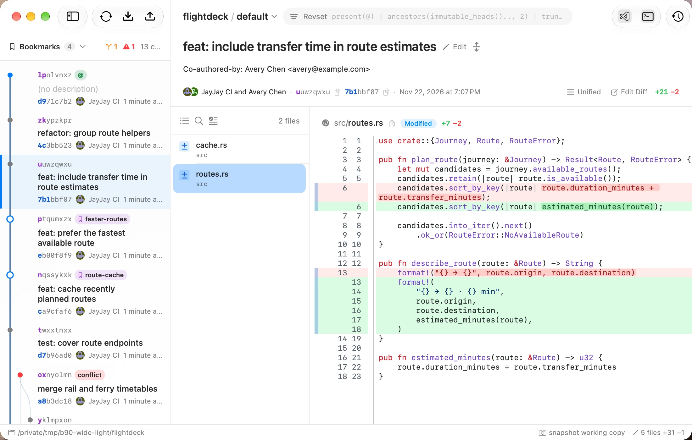
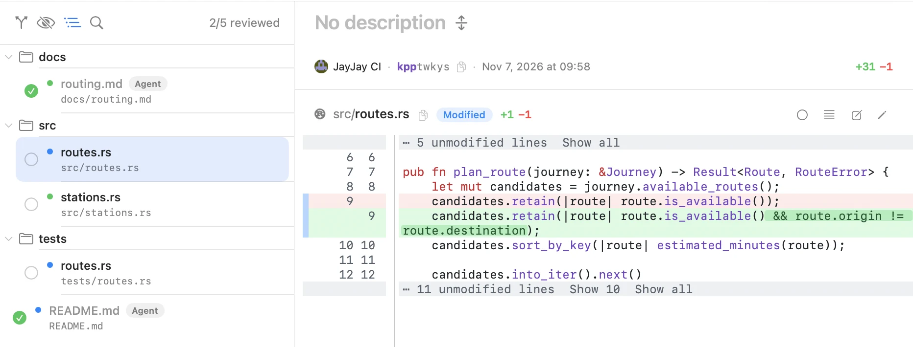

JayJay is a native client for Jujutsu, and a small suite around it:
- The app is a full jj client with review built in, on macOS, Linux, and Windows.
- The
jayjaycommand and agent skill let a coding agent take part in the review. - JayJay Diff is the same review in a browser, for GitHub pull requests.
Every part has the same purpose: to help you focus your attention on what an agent changed, and to show that you did. It is free and needs no account.


Why it exists #
Agents made writing code cheap. They did not make reading it cheap. I now have several agents working in several workspaces, and the slow part of my day is looking at what they did. An agent can write the code, the tests, and a review of its own diff. What it cannot supply is proof of human attention: the fact that a person looked.
Jujutsu is the right base for that. History is meant to be rewritten, a change keeps its ID through every rewrite, every operation can be undone, and a workspace is one command. I tried the GUIs that existed, and none of them felt native or was made for reviewing, so I built one.
What it does #
Review file by file, and keep your place. Mark a file or a hunk as reviewed and it hides. The next unreviewed file opens by itself. Marks belong to the content, so a rebase that changes nothing keeps them. After a force push you see only what really changed.
Let an agent clear the trivial part first. jayjay review mark lets an agent mark the files that need no human judgment, such as a rename or a generated file. They show up with an Agent badge, and the rest waits for you.

Leave notes on a line, and have the agent answer them. Notes are anchored to lines in the diff. An agent reads them with jayjay review notes, fixes the code, and resolves them. It can leave notes for you too.
Reshape the change after you read it. Split the reviewed files into their own change, or pick hunks and line ranges in Diff Edit. Drag to rebase. Undo anything.
Publish a stack as pull requests. One pull request per change, with Viewed marks kept in sync with GitHub.
See every workspace at once. Repo Overview shows each workspace and lane, including the ones agents are working in.
Around the review is a full jj client: the change graph, rebase, squash and split, bookmarks, revsets, workspaces, conflicts, the operation log, and a command palette that runs raw jj in the window. The guide covers each of them.
Try the review in a browser #
You do not need jj, or an install, to see the idea. JayJay Diff is not only for jj changes: it opens any public GitHub pull request, comparison, or commit with the same review marks. Swap github.com for diff.hewig.dev in the URL:
https://diff.hewig.dev/<owner>/<repo>/pull/<number>Each hunk is fingerprinted from its content and the lines around it, so after a force push or a rebase only the hunks that changed come back for review. Marks and notes stay in your browser. Signing in with GitHub is optional; it raises the rate limit and can sync your marks with GitHub's Viewed boxes.
Native #
The core is Rust, built on jj-lib. The macOS app is SwiftUI and AppKit, and the Linux and Windows apps are GPUI. Nothing is a web view. It stays fast on large repositories, which is the reason I started.
Install #
macOS 26 or later, Apple silicon:
brew install --cask hewigovens/tap/jayjayLinux, x86_64 and aarch64 (Debian package, AppImage, or jayjay-appimage on AUR):
curl -fsSL https://jayjay.hewig.dev/install.sh | bashWindows (beta): Microsoft Store.
What to know first #
- The app is for people who already use jj. It does not teach jj and it is not a Git client. JayJay Diff works on any GitHub repository.
- The apps are free and source-available under BSL 1.1, which converts to Apache-2.0 in 2030. The Rust crates are Apache-2.0 today.
- Anonymous statistics are the app version, platform, OS version, CPU architecture, and random identifiers. They never include repositories, files, or commands, and you can turn them off. The privacy page has the details.
- It is one person's project and it is not finished. Codex and Claude wrote almost all of the code; I reviewed it in JayJay.
The ask #
If you do not use jj, start with JayJay Diff on a pull request you have to review anyway. If you do, try the app on a real working copy and tell me the first step that confused you or was missing. GitHub issues or Discord both work.
If you want the longer story of how a GitHub Desktop patch became this, I wrote that separately: Proof of Human Attention.